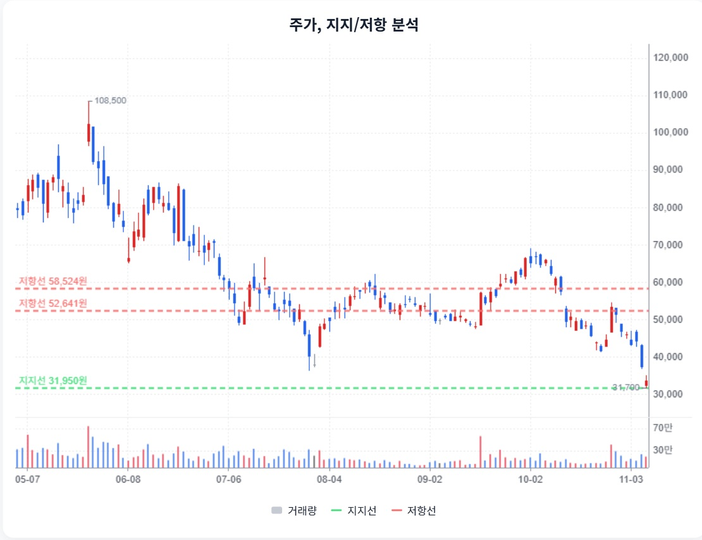

해성디에스 · StockEasy 읽기용 정리
첨부 확인 2026-11-08 · 핵심 내용을 문단별로 재구성했습니다. 원문 전체 전사가 아니며, 차트는 첨부 화면에서 발췌했습니다. 원문의 매수·매도 표현과 가격 구간은 자동 매매 신호로 채택하지 않았습니다.
1. 본업 회복과 EPS 차이
StockEasy 원문 요약 · 주장과 가정 포함
원문은 DDR5와 패키지 기판 회복, 증설 효과를 이익 개선의 근거로 설명하고 증권사별 EPS 전망을 비교합니다.
2. 현금 숫자의 단위를 먼저 바로잡기
StockEasy 원문 요약 · 주장과 가정 포함
원문은 교보의 현금11, OCF98·FCF14 등 수치를 사용해 현금 여력을 설명합니다.
3. 2만~2.4만원 계산 구간의 전제
StockEasy 원문 요약 · 주장과 가정 포함
원문은 과거 PER/PBR과 평균 이익을 이용한 가치 하단을 제시하고 마진·차입 부담을 재검토 조건으로 설명합니다.
4. 기술적 지지와 이익 방어는 별도
StockEasy 원문 요약 · 주장과 가정 포함
원문은33,700원 기준 주가와 지지·저항, 추세 약화를 설명합니다.

StockEasy 첨부 원문 발췌 · 자료 시점/공급자가 다른 외부 차트이며 현재 시세가 아닙니다.